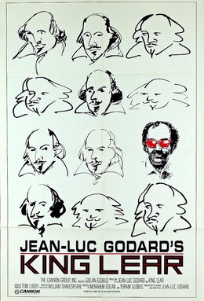

Jean-Luc Godard
1987
90 minutes
You have chosen poorly. Your adventure is over.
Holy shit. You are not going to like this one. On paper, sure. You're going to say to yourself, "How is there a Godard version of King Lear that I haven't heard of?" You're going to look at the cast and determine that it has fucking Norman Mailer and Burgess Meredith and Peter Sellers and Molly Ringwald and Julie Delpy and Leos Carax and even, okay fine, Woody Allen in it.
But wait. To your horror you didn't read the cast list closely enough. That's not Peter Sellers playing William Shakespeare's descendant William Shakespeare Jr. the Fifth, it's Peter Sellars with an "a". Not a big deal I guess, considering the blazing A-list (for 1987) power of the rest of the cast.
Molly Ringwald is Cordelia for fuck's sake! Norman Mailer is in the title role! This is going places.
This is not, in fact, going anywhere. It's obvious pretty quickly that this won't be a straight adaptation of King Lear. Oh, okay, they're going to do some sort of meta-textual treatment of Lear in a timeline where much of human civilization and culture has been lost after the Chernobyl disaster caused the acid rain to destroy the ozone layer or whatever. Okay, mildly dated but fine. Environmental apocalypse never goes out of style, every time we survive one problem we cause three more. We can still imagine what that will look like with humans trying to recreate gradually forgotten plotlines and motivations from the Old World when EVERYTHING has changed...
Nope.
This is deliberately a mass of confusing images with Norman Mailer and his daughter looking at a script and reading a handful of lines, and then Peter SellARS spouting some shit about WOOOO I AM THE GHOST OF SHAKESPEARES PAST and there are some goblins or something and Molly Ringwald stands around looking pretty and dramatic in a few scenes and then unrelated images are shown and this all takes place in 90 minutes that easily feel like twice the running length.
You have proven yourself repeatedly to be a fan of pretentious garbage and jokes on the viewer which you are happy to vigorously defend. This is pompous shit that you had not set your stomach for and you are viscerally angry by the time you finish the film. You'd be ready to go punch the director in the face if Godard had not already perished by assisted suicide at the age of 91 three years ago.
You watched this all on your phone at the bar and even spent Kanopy tickets doing so. Holy fuck are you mad about it. Ninety minutes of your life you will never get back. Chill out, you would have wasted it anyway. Have another beer.
Time to choose something different: